介绍 Anthropic Interviewer：1,250 名专业人士谈与 AI 共事
📖 中文摘要
专业术语注解
访谈提纲（interview rubric）：规定访谈主题与问题方向的框架性指南系统提示（system prompt）：设定 AI 角色与行为准则的顶层指令定性研究（qualitative research）：通过访谈等非数值方式理解现象的研究方法聚类（clustering）：把相似内容自动归组、提取主题的统计方法幻觉（hallucination）：AI 一本正经地编造不存在事实的现象📄 中文全文
- 分类： 社会影响
- 来源： https://www.anthropic.com/research/anthropic-interviewer
社会影响
2025 年 12 月 4 日
我们正在推出一款新工具 Anthropic Interviewer，以帮助了解人们对 AI 的看法。在这篇研究文章中，我们介绍该工具，描述在一批专业人士样本上对它的测试，并讨论我们的初步发现。我们还讨论了借助该工具以及通过与创意工作者、科学家和教师的合作，我们今后可以在这一方向上探索的未来工作。
引言
如今，数以百万计的人每天都在使用 AI。作为一家开发 AI 系统的公司，我们想知道他们如何使用 AI、为什么使用 AI，以及 AI 对他们的影响。部分原因是我们要利用人们的反馈来开发更好的产品——但也是因为理解人与 AI 的互动是我们这个时代最重大的社会学问题之一。 我们最近设计了一款工具，用于在保护用户隐私的同时研究 AI 使用模式。它使我们能够分析整个经济领域中 AI 使用模式的变化。但这款工具只能让我们了解在 Claude 对话中发生了什么。那么对话之后呢？人们实际上是如何_使用_ Claude 的输出的？他们对此感受如何？他们设想 AI 在未来扮演什么角色？如果我们想全面了解 AI 在人们生活中不断变化的角色，并让人类在模型开发中居于中心地位，我们就需要_直接询问人们_。 这样的项目要求我们进行数百次访谈。在这里，我们借助 AI 来帮助我们完成这项工作。我们构建了一款名为 Anthropic Interviewer 的访谈工具。Anthropic Interviewer 由 Claude 驱动，以前所未有的规模自动运行详细访谈，并将结果反馈给人类研究人员进行分析。这是理解我们用户的需求和期望的新一步，也是为分析 AI 的社会和经济影响收集数据的新一步。 为了测试 Anthropic Interviewer，我们让它与 1,250 名专业人士进行了访谈——包括普通劳动者（N=1,000）、科学家（N=125）和创意工作者（N=125）——了解他们对 AI 的看法。我们将这次初步测试的所有访谈数据公开发布（经参与者同意），供研究人员探索；我们自己的分析如下。简而言之，以下是我们发现的一些例子： * 在我们的样本中，人们对 AI 在工作中发挥的作用持乐观态度。 大多数讨论话题都带有积极情绪。然而，少数话题，如教育融合、艺术家被取代以及安全担忧，则伴随着更为悲观的看法。 * 普通劳动者希望保留那些界定其职业身份的任务，同时将日常工作委托给 AI。 他们设想的未来是：常规任务实现自动化，而他们的角色转变为监督 AI 系统。 * 创意工作者正在利用 AI 提高生产力，尽管面临同行的评判和对未来的焦虑。 他们既要应对创意圈中 AI 使用所伴随的即时污名，也要应对对经济性取代以及人类创作身份被侵蚀的更深层担忧。 * 科学家希望与 AI 合作，但尚不能信任它在核心研究中的表现。 科学家一致表示希望有一种能够提出假设和设计实验的 AI。但目前，他们只把实际使用限于撰写手稿或调试分析代码等其他任务。
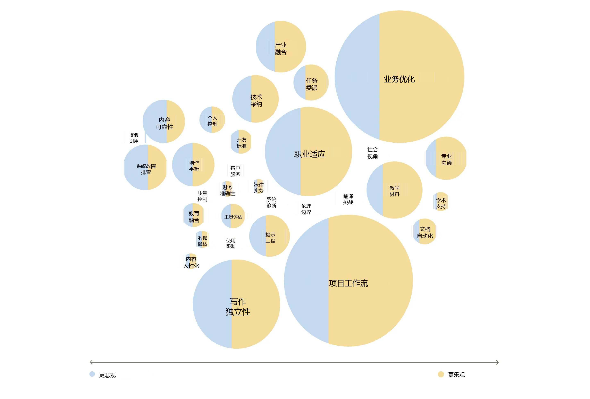
人们在接受 Anthropic Interviewer 访谈时讨论的不同话题。在我们研究的所有三个样本——普通劳动者、科学家和创意工作者——中，参与者对 AI 对其职业活动的影响表达了以积极为主的情绪。某些话题确实引人深思，尤其是围绕个人控制、工作取代和自主权的问题。在这张图中，话题大致按从悲观到乐观的顺序排列。 人们在接受 Anthropic Interviewer 访谈时讨论的不同话题。在我们研究的所有三个样本——普通劳动者、科学家和创意工作者——中，参与者对 AI 对其职业活动的影响表达了以积极为主的情绪。某些话题确实引人深思，尤其是围绕个人控制、工作取代和自主权的问题。在这张图中，话题大致按从悲观到乐观的顺序排列。
人们在接受 Anthropic Interviewer 访谈时讨论的不同话题。在我们研究的所有三个样本——普通劳动者、科学家和创意工作者——中，参与者对 AI 对其职业活动的影响表达了以积极为主的情绪。某些话题确实引人深思，尤其是围绕个人控制、工作取代和自主权的问题。在这张图中，话题大致按从悲观到乐观的顺序排列。
 人们在接受 Anthropic Interviewer 访谈时讨论的不同话题。在我们研究的所有三个样本——普通劳动者、科学家和创意工作者——中，参与者对 AI 对其职业活动的影响表达了以积极为主的情绪。某些话题确实引人深思，尤其是围绕个人控制、工作取代和自主权的问题。在这张图中，话题大致按从悲观到乐观的顺序排列。
普通劳动者
悲观| 乐观
---|---
人们在接受 Anthropic Interviewer 访谈时讨论的不同话题。在我们研究的所有三个样本——普通劳动者、科学家和创意工作者——中，参与者对 AI 对其职业活动的影响表达了以积极为主的情绪。某些话题确实引人深思，尤其是围绕个人控制、工作取代和自主权的问题。在这张图中，话题大致按从悲观到乐观的顺序排列。
普通劳动者
悲观| 乐观
---|---职业适应。 卡车调度员：“我一直在想人类能为这个行业提供哪些无法被自动化的东西，并真正专注于那些方面，比如个性化的人际互动。不过，我认为从长远来看这并非必需。我仍在努力弄清楚，AI 无法‘接管’的、值得去提升的技能有哪些。”| 社会视角。 办公室助理：“对我来说，它就像当年的电脑或打字机一样是一种工具——电脑并没有淘汰数学家，只是让他们能做更多的事，而这就是我看到 AI 在最好的未来中所走向的方向。” 写作独立性。 销售员：“我听同事说，他们能看出电子邮件是 AI 生成的，而且对发件人有些负面看法。他们会觉得发件人‘太懒了’，懒得给他们写一封私人便笺，而是把这件事推给 AI 去做。”| 教育融合。 特教教师：“我希望 AI 能成为更具协作性的伙伴，帮助我更好地管理时间，帮助我拓展创造力，这样我就能为学生提供各种各样的活动和作业，其中有些可能是我自己想不出来的。” 来自普通劳动者群体的专业人士按话题分类的示例引语。这项研究既旨在解读乐观情绪，也旨在梳理潜在的焦虑，以更好地理解 AI 实际上如何在不同职业情境中重塑工作。 创意工作者 悲观| 乐观 ---|---
控制边界。 游戏书作家：“在这些讲故事的过程中，我认为大多数时候所谓的协作只是一种幻觉……很少有哪一刻我真的觉得是 AI 在推动创作决策。”| 工作流自动化。 社交媒体经理：“说实话，我压力小多了。它给我带来了巨大的效率提升，让我能专注于我最喜欢的部分（拍摄和剪辑）。” 作家被取代。 创意小说作家：“AI 写的小说可能有很棒的情节，技术上也很出色。但它不会有只有人类才能编织进故事中的那种更深层的细微之处。”| 音乐制作。 音乐制作人：“有时到了添加歌词的时候，我会让 ChatGPT 或 Claude 列出一些有趣的词语搭配。只要拿到一份长长的清单，在上面试唱伴奏，往往就能找到一段副歌，或者至少是一个歌曲创意的种子。” 来自创意工作者的示例引语，按话题分类。 科学家 悲观| 乐观 ---|---
安全担忧。 医学科学家：“目前我们对 AI 的信心还不够高，不能把数据托付给它。我们又是一家商业机构，所以对于可能与 AI 系统共享的数据，我们有些保密方面的担忧。”| 研究辅助。 分子生物学家：“如果 AI 能把所有这些数据整合并标准化到一个单一数据库中，那对生物学发现来说将是一件非常激动人心的事情。你可以看到表达动态如何在不同细胞模型、组织类型、疾病状态等之间变化。” 内容核验。 经济学家：“我非常希望 AI 能准确抓取信息、进行总结，并用它来撰写基金申请的核心内容。AI 通常写得很不错；现在的问题是我不能指望它不产生幻觉，或者直白地说，不说谎。”| 代码开发。 食品科学家：“说实话，如果没有 AI 工具，当学生的代码出了问题，我真不知道该怎么帮她。” 来自科学家的示例引语，按话题分类。
方法
这次初步测试探索了劳动者如何将 AI 融入其专业实践，以及他们对 AI 在未来角色中的感受。我们进行了访谈以产生定性数据，并辅以调查问卷中的定量数据，参与者回答了有关其行为与职业背景的问题。我们还让一个独立的 AI 分析工具阅读访谈记录，并从非结构化数据中聚类出涌现的、总括性的主题——例如，在访谈中提到某个特定话题或表达某种特定观点的参与者比例。
参与者
我们使用 Anthropic Interviewer 与 1,250 名专业人士进行了访谈。我们打算让该工具访谈普通的 Claude.ai 用户，但就本次初步测试而言，我们寻找的是从事各种职业的参与者，并通过众包平台与他们取得联系（所有参与者除众包工作外，都有一份作为其主要职业的工作）。 我们的 1,000 名参与者来自一个一般的职业样本（也就是说，我们没有从特定职业中挑选参与者）。在该群体中，最大的子群体来自教育指导类（17%）、计算机与数学类职业（16%），以及艺术、设计、娱乐和媒体类（14%）。 我们还招募了两个各有 125 名参与者的专业样本。第一个来自创意职业：主要是作家（占样本的 48%）和视觉艺术家（21%），另有较小群体的电影制作者、设计师、音乐家和手工艺人。第二个来自科学界，包括物理学家（9%）、化学家（9%）、化学工程师（7%）和数据科学家（6%），并覆盖了 50 多个其他不同的科学学科。 我们选择增加这两个专业子群体，是因为它们代表了 AI 角色仍存在争议且正在快速演变的职业领域。我们假设创意工作者和科学家会展现出不同的 AI 采用模式和专业担忧。 所有参与者都提供了知情同意，允许我们出于研究目的分析其访谈数据，并允许我们公开发布访谈记录。
Anthropic Interviewer 的工作原理
Anthropic Interviewer 分三个阶段运作：规划、访谈和分析。下面，我们逐一描述每个阶段。
 Anthropic Interviewer 流程的三个阶段。
Anthropic Interviewer 流程的三个阶段。
规划
在这一阶段，Anthropic Interviewer 会创建一份访谈细则，使它在数百或数千次访谈中都能聚焦于相同的总体研究问题，同时仍足够灵活，以适应个别访谈中可能出现的偏差和离题内容。 我们开发了一个系统提示词（system prompt）——一套关于 AI 模型应如何工作的总体指令——来赋予 Anthropic Interviewer 其方法论。我们在这里加入了针对每个样本的假设，以及制定访谈计划的最佳实践（这些实践是与我们的用户研究团队合作确立的）。 在设置好系统提示词之后，Anthropic Interviewer 利用其对研究目标（见下文）的了解来生成具体问题和计划好的对话流程。随后是一个审查阶段，人类研究人员与 Anthropic Interviewer 协作，进行任何必要的修改以敲定计划。
访谈
然后，Anthropic Interviewer 按照其访谈计划进行实时、自适应的访谈。在这一阶段，我们加入了一个系统提示词，指示 Anthropic Interviewer 如何运用访谈的最佳实践。
Anthropic Interviewer 进行的访谈出现在 Claude.ai 上，每位参与者约持续 10-15 分钟。
 访谈是在这样的界面上进行的，位于 claude.ai（上图是现已向用户开放的模块）。
访谈是在这样的界面上进行的，位于 claude.ai（上图是现已向用户开放的模块）。
分析
访谈完成后，一位人类研究人员与 Anthropic Interviewer 协作分析访谈记录。Anthropic Interviewer 的分析步骤以最初的访谈计划为输入，输出研究问题的答案以及说明性引语。在这一阶段，我们还使用了自动化 AI 分析工具来识别涌现主题，并量化其在参与者中的普遍程度。
研究目标
如上所述，Anthropic Interviewer 通过其系统提示词了解研究目标，并以回答这些目标的方式开展访谈。请注意，在这项初步研究中，我们的主要意图是对 Anthropic Interviewer 进行实际测试；不过，下面的目标确实产生了有趣的数据，我们将在下文中进行分析。 以下是每个子样本的主要研究目标： * 普通劳动者。 “理解个人如何将 AI 工具融入其专业工作流程，探索使用模式、任务偏好和互动风格，以深入了解工作场所情境中人与 AI 之间不断演变的关系。” * 创意工作者。 “理解创意专业人士目前如何将 AI 融入其创作过程，他们对 AI 影响其工作的体验，以及他们对 AI 与人类创造力未来关系的愿景。” * 科学家。 “理解 AI 系统如何融入科学家的日常研究工作流程，考察他们在科学过程不同阶段当前的使用模式、感知价值、信任程度和采用障碍。”
结果
下面我们讨论在访谈中的发现，并提供来自调查问卷和主题分析的定量数据。
AI 对普通劳动者的影响
总体而言，我们一般专业样本的成员将 AI 描述为对他们生产力的提升。在调查中，86% 的专业人士表示 AI 为他们节省了时间，65% 表示他们对 AI 在工作中发挥的作用感到满意。
浮现出的一个主题是工作场所动态如何影响 AI 的采用。69% 的专业人士提到在工作中使用 AI 工具可能带来的社会污名——一位事实核查员告诉 Anthropic Interviewer：“一位同事最近说他讨厌 AI，我什么也没说。我不会告诉任何人我的工作流程，因为我知道很多人对 AI 的感受。”
41% 的受访者表示他们对自己的工作感到安稳，并相信人类技能不可替代，而 55% 的人则对 AI 对其未来的影响表示焦虑。在表示焦虑的群体中，25% 的人说他们为 AI 的使用设定了边界（例如，一位教育工作者总是自己制定教学计划），而 25% 的人调整了他们的工作角色，承担了额外的职责或从事更专门的任务。
对 AI 使用的态度差异很大。一位数据质量管理经理刻意选择了学习而非自动化：“我试着把它想成是学一门外语——只用翻译软件不会让你学到任何东西，但有一位能回答问题并根据你的需求量身定制的辅导老师，才真正有帮助。”一位营销人员采取了灵活的方法：“我在努力实现多元化，同时保持一个强大的利基。”一位口译员已经在准备完全离开这个领域：“我相信 AI 最终会取代大多数口译员……所以我已经在为职业转换做准备，可能会拿个文凭，进入另一个行业。”值得注意的是，只有 8% 的专业人士在表达焦虑的同时没有任何明确的补救计划。
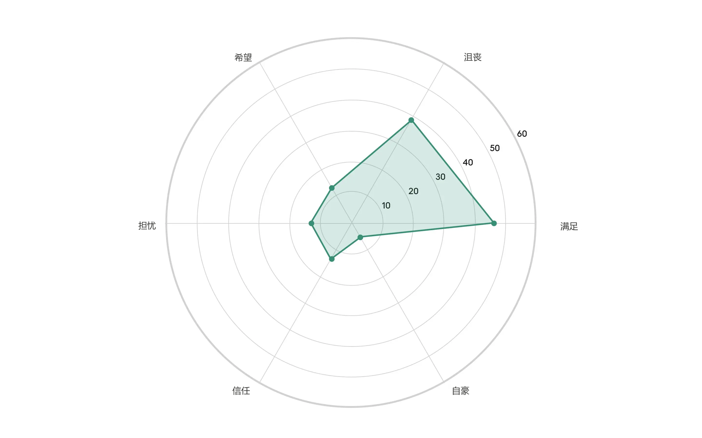 来自 ONET 数据库的六个主要职业类别中，普通劳动者群体专业人士在访谈中浮现的六大情绪——希望、担忧、满足、沮丧、宽慰和信任——的强度。每个轴代表一种情绪，距中心的距离表示参与者在访谈中表达该情绪的百分比；离中心越远的点反映越高的出现率。我们分析了样本中六个最突出的职业类别中的这些情绪。
来自 ONET 数据库的六个主要职业类别中，普通劳动者群体专业人士在访谈中浮现的六大情绪——希望、担忧、满足、沮丧、宽慰和信任——的强度。每个轴代表一种情绪，距中心的距离表示参与者在访谈中表达该情绪的百分比；离中心越远的点反映越高的出现率。我们分析了样本中六个最突出的职业类别中的这些情绪。
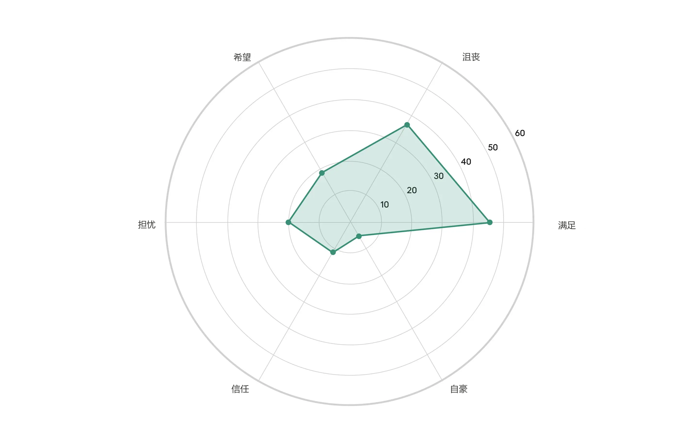
来自 ONET 数据库的六个主要职业类别中，普通劳动者群体专业人士在访谈中浮现的六大情绪——希望、担忧、满足、沮丧、宽慰和信任——的强度。每个轴代表一种情绪，距中心的距离表示参与者在访谈中表达该情绪的百分比；离中心越远的点反映越高的出现率。我们分析了样本中六个最突出的职业类别中的这些情绪。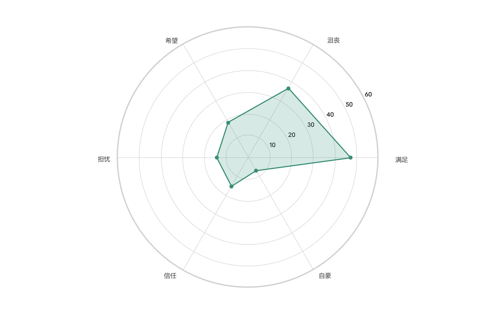
来自 ONET 数据库的六个主要职业类别中，普通劳动者群体专业人士在访谈中浮现的六大情绪——希望、担忧、满足、沮丧、宽慰和信任——的强度。每个轴代表一种情绪，距中心的距离表示参与者在访谈中表达该情绪的百分比；离中心越远的点反映越高的出现率。我们分析了样本中六个最突出的职业类别中的这些情绪。 来自 ONET 数据库的六个主要职业类别中，普通劳动者群体专业人士在访谈中浮现的六大情绪——希望、担忧、满足、沮丧、宽慰和信任——的强度。每个轴代表一种情绪，距中心的距离表示参与者在访谈中表达该情绪的百分比；离中心越远的点反映越高的出现率。我们分析了样本中六个最突出的职业类别中的这些情绪。 来自 ONET 数据库的六个主要职业类别中，普通劳动者群体专业人士在访谈中浮现的六大情绪——希望、担忧、满足、沮丧、宽慰和信任——的强度。每个轴代表一种情绪，距中心的距离表示参与者在访谈中表达该情绪的百分比；离中心越远的点反映越高的出现率。我们分析了样本中六个最突出的职业类别中的这些情绪。
我们还对专业人士访谈中表现出的不同情绪的强度进行了分类（见上图）。不同职业表现出惊人一致的情绪画像，其特点是高水平的满足感。然而，这种满足感与沮丧感并存，表明专业人士发现 AI 很有用，同时也遇到了显著的落地挑战。
来自 ONET 数据库的六个主要职业类别中，普通劳动者群体专业人士在访谈中浮现的六大情绪——希望、担忧、满足、沮丧、宽慰和信任——的强度。每个轴代表一种情绪，距中心的距离表示参与者在访谈中表达该情绪的百分比；离中心越远的点反映越高的出现率。我们分析了样本中六个最突出的职业类别中的这些情绪。
我们还对专业人士访谈中表现出的不同情绪的强度进行了分类（见上图）。不同职业表现出惊人一致的情绪画像，其特点是高水平的满足感。然而，这种满足感与沮丧感并存，表明专业人士发现 AI 很有用，同时也遇到了显著的落地挑战。
增强与自动化
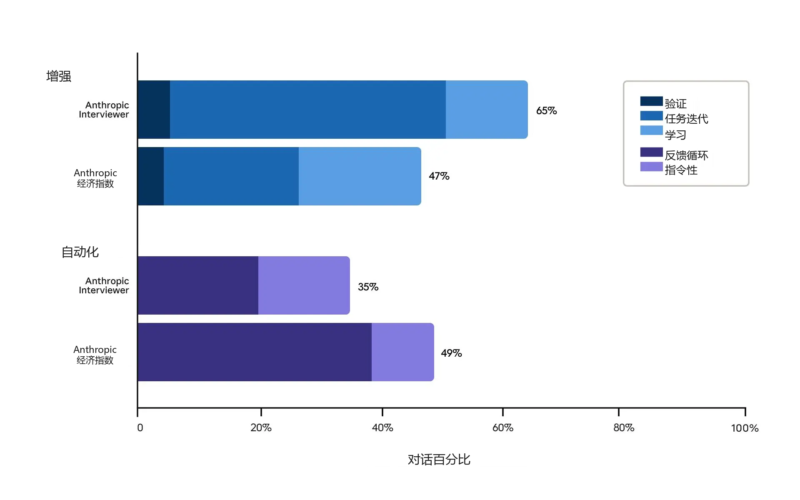
专业人士向 Anthropic Interviewer 自我报告的增强与自动化情况，与 Anthropic 经济指数中观察到的 Claude 实际使用情况对比。专业人士将自己的 AI 使用描述为 65% 增强性、35% 自动化性，而实际的 Claude 对话显示 47% 为增强、49% 为自动化。经济指数的百分比之和不为 100%，因为一些互动未被分类。 在此前的一项分析中，我们将 AI 用途分为_增强_（AI 与用户协作执行任务）或_自动化_（AI 直接执行任务）两类。在 Anthropic Interviewer 的数据中，65% 的参与者将 AI 的主要角色描述为增强性的；35% 描述为自动化性的。值得注意的是，这与我们最新分析中人们实际使用 Claude 的方式不同，后者显示出更均匀的分布：47% 的任务涉及增强，49% 涉及自动化。对这一差异有多种可能的解释： * Anthropic Interviewer 研究的受访者与我们此前研究中的用户之间可能存在样本差异； * 人们在 Claude 上的对话可能看起来比实际更具自动化性——用户可能会在对话结束后对 Claude 的输出进行润色或调整； * 参与者可能会针对不同任务使用不同的 AI 提供商； * 自我报告的互动风格可能与现实使用情况存在差异； * 专业人士可能认为他们的 AI 使用比其 Claude 对话模式所显示的更具协作性。 专业人士设想的未来同时包含增强和自动化——常规、行政性任务实现自动化，同时保留人类的监督。48% 的受访者考虑将职业转向专注于管理和监督 AI 系统而非从事直接技术工作的岗位。 ……如果我使用 AI 并借助它提升我的技能，它能在行政方面为我节省大量时间，从而让我有更多时间与人相处。 一位牧师说“……如果我使用 AI 并借助它提升我的技能，它能在行政方面为我节省大量时间，从而让我有更多时间与人相处”。他还强调了“良好边界”的重要性，以及避免变得“如此依赖 AI，以至于离开它就无法生活，或者无法做我被呼召去做的事。” 一位传播专业人士说：“我相信我的大部分工作总有一天会被 AI 接管。我认为我的角色最终会变成专注于提示、监督、训练和质量控制这些模型，而不是自己实际去做这项工作。”目前被禁止在工作中使用 AI 的专业人士——例如一些律师、会计师和医疗工作者——预计政策变化将允许他们在未来自动化许多任务。AI 对创意职业的影响
我们的创意专业人士样本也报告说 AI 让他们更高效。97% 的人表示 AI 为他们节省了时间，68% 的人表示它提高了他们工作的质量。一位小说家解释说：“我觉得自己写得快了，因为研究不再那么令人望而生畏，”而一位网络内容作者报告说，他们“从每天能产出 2,000 字打磨好的专业内容，变成了每天超过 5,000 字。”一位摄影师指出 AI 处理了常规编辑任务——将周转时间从“12 周缩短到大约 3 周”——使他们能够“有意地做出一些我过去可能会错过或没有时间做的编辑和微调。” 与普通样本类似，70% 的创意工作者提到要努力管理围绕 AI 使用的同行评判。一位地图艺术家说：“我不希望我的品牌和商业形象与 AI 以及围绕它的污名捆绑得太紧。” 某些配音领域实际上已经因为 AI 的兴起而消亡。 经济焦虑贯穿于创意工作者的访谈中。一位配音演员表示：“某些配音领域实际上已经因为 AI 的兴起而消亡，比如工业配音。”一位作曲家担心一些平台可能会“利用 AI 技术及其出版曲库[无限]生成新音乐”，让市场充斥着比人类制作音乐更便宜的替代品。另一位艺术家表达了类似的担忧：“现实地说，我担心我将不得不继续使用生成式 AI，甚至开始出售生成内容，只是为了在市场上跟上节奏、维持生计。”一位创意总监说：“我完全明白，我的收益是另一位创意者的损失。过去我必须每天付 2,000 美元请的产品摄影师，现在拿不到我的生意了。”（请注意，Claude 不生成图像、视频或音乐——参与者表达的焦虑因此是针对整个 AI 领域，而非特指 Claude）。 全部 125 名参与者都提到希望保持对其创作产出的控制。然而，这种边界在实践中被证明是不稳定的：许多参与者承认存在 AI 主导创作决策的时刻。一位艺术家坦言：“很大一部分概念是由 AI 驱动的；我只是试图引导它……60% 是 AI，40% 是我的想法。”一位音乐家说：“我不想承认，但在使用这个插件时，它掌握着大部分控制权。”
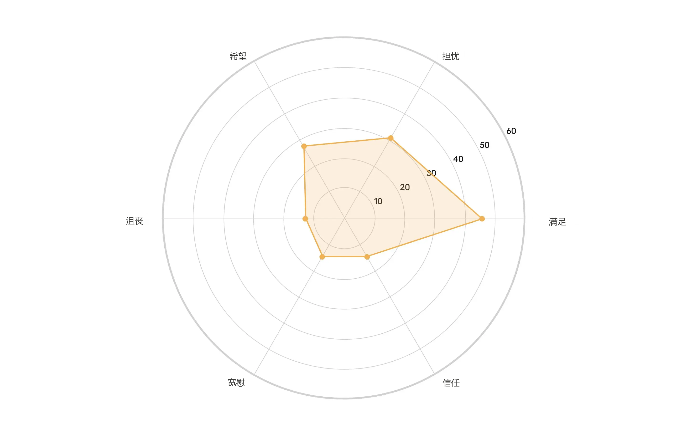
创意专业人士在访谈中报告的六大情绪——希望、担忧、满足、沮丧、宽慰和信任——的强度。轴表示参与者在访谈中表达该情绪的访谈百分比。我们分析了样本中六个最突出的创意学科中的这些情绪。 创意专业人士在访谈中报告的六大情绪——希望、担忧、满足、沮丧、宽慰和信任——的强度。轴表示参与者在访谈中表达该情绪的访谈百分比。我们分析了样本中六个最突出的创意学科中的这些情绪。
创意专业人士在访谈中报告的六大情绪——希望、担忧、满足、沮丧、宽慰和信任——的强度。轴表示参与者在访谈中表达该情绪的访谈百分比。我们分析了样本中六个最突出的创意学科中的这些情绪。
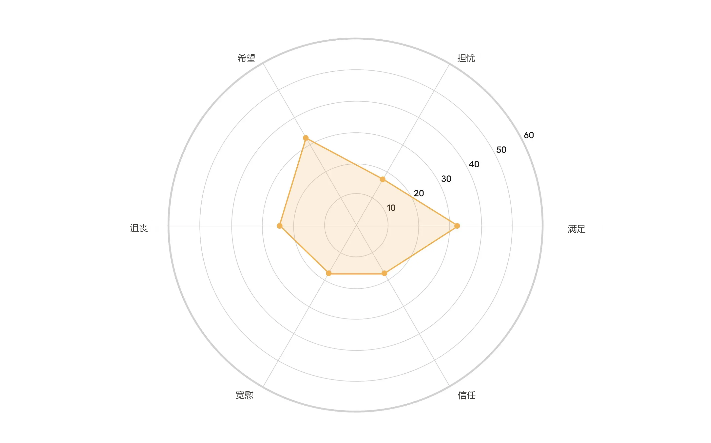
创意专业人士在访谈中报告的六大情绪——希望、担忧、满足、沮丧、宽慰和信任——的强度。轴表示参与者在访谈中表达该情绪的访谈百分比。我们分析了样本中六个最突出的创意学科中的这些情绪。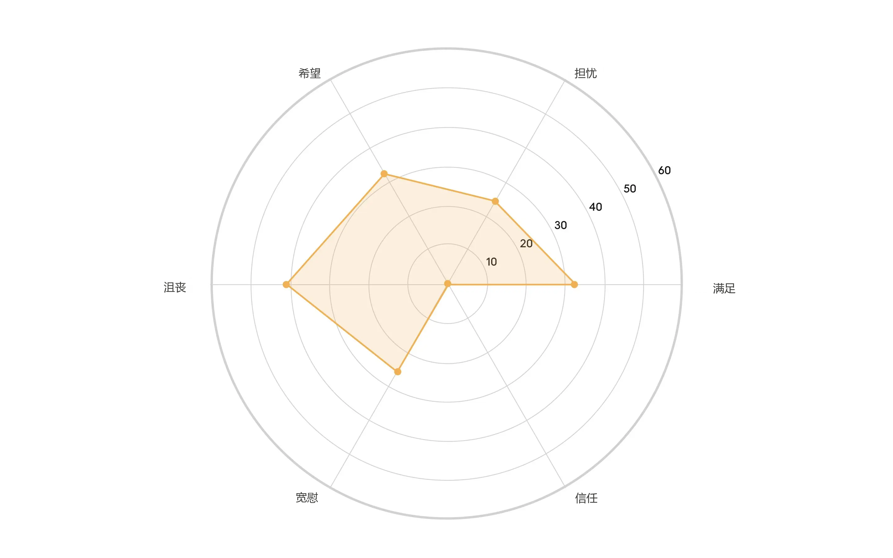
创意专业人士在访谈中报告的六大情绪——希望、担忧、满足、沮丧、宽慰和信任——的强度。轴表示参与者在访谈中表达该情绪的访谈百分比。我们分析了样本中六个最突出的创意学科中的这些情绪。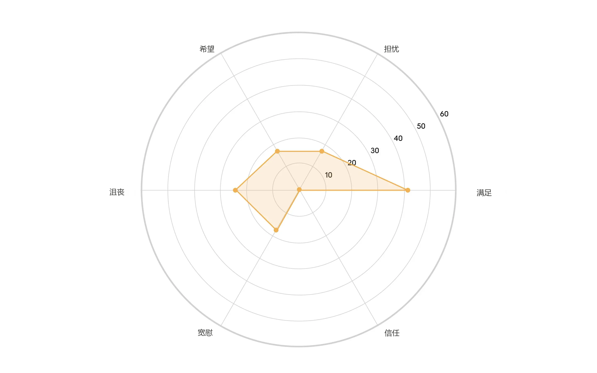
创意专业人士在访谈中报告的六大情绪——希望、担忧、满足、沮丧、宽慰和信任——的强度。轴表示参与者在访谈中表达该情绪的访谈百分比。我们分析了样本中六个最突出的创意学科中的这些情绪。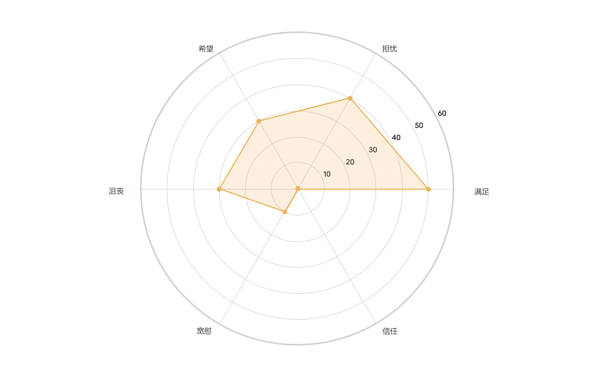
创意专业人士在访谈中报告的六大情绪——希望、担忧、满足、沮丧、宽慰和信任——的强度。轴表示参与者在访谈中表达该情绪的访谈百分比。我们分析了样本中六个最突出的创意学科中的这些情绪。 如上图所示，不同学科表现出不同的情绪画像：游戏开发者和视觉艺术家报告了高水平的满足感，但矛盾地与较高的担忧并存。设计师表现出一种相反的模式，以沮丧为主且满足感明显较低。在所有学科中，信任始终保持在低位，表明人们对 AI 对创意工作的长期影响存在共同的疑虑。满足感与担忧之间的张力可能凸显了创意专业人士的处境：他们一边拥抱 AI 工具，一边又在为人类创造力的未来忧心忡忡。情绪谱系上的广泛分布证实，不同的创意职业正通过截然不同的情绪透镜体验 AI 的融入。AI 对科学工作的影响
我们与化学、物理、生物学和计算领域研究人员的访谈发现，在许多情况下，AI 尚无法处理其研究的核心环节，如假设生成和实验。科学家主要报告将 AI 用于文献综述、编码和写作等其他任务。这是一个 AI 公司——包括 Anthropic——正在努力改进其工具和能力的领域。 信任和可靠性担忧是 79% 访谈中的主要障碍；当前 AI 系统的技术局限出现在 27% 的访谈中。一位信息安全研究员指出：“如果我必须逐一核对和确认 [AI] 智能体给我的每一个细节，以确保没有错误，那就在根本上违背了让智能体做这份工作的初衷。”一位数学家呼应了这一挫败感：“在我花了时间核验 AI 的输出之后，最终花费的时间其实是一样的。”一位化学工程师提到对谄媚（sycophancy）的担忧，他解释说：“AI 倾向于迎合[用户]的偏好，并根据他们提问的方式改变答案。这种不一致让我对 AI 的回答持怀疑态度。”
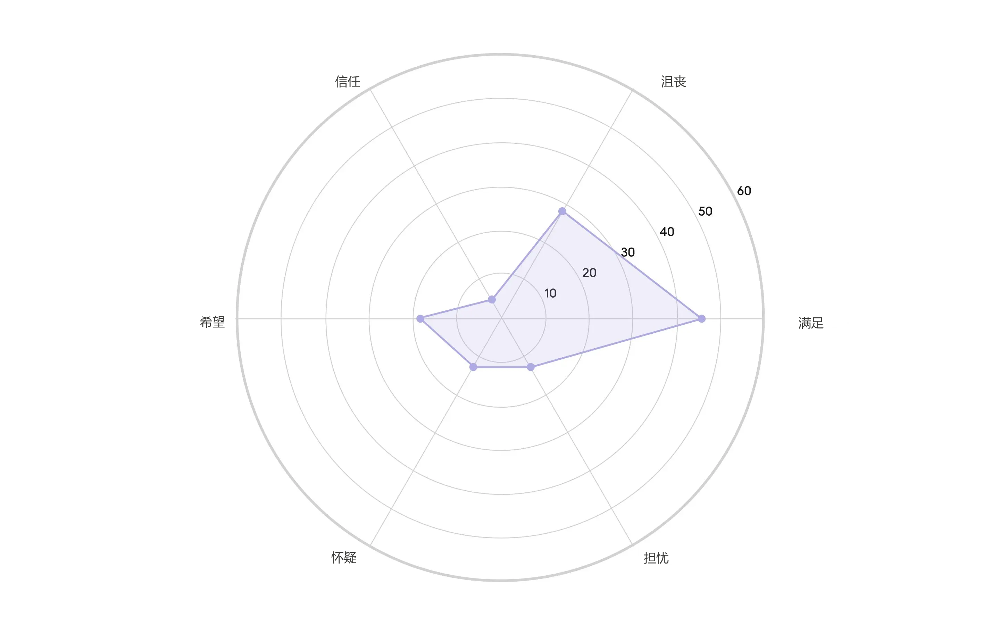
科学家在访谈中报告的六大情绪——希望、满足、沮丧、担忧、怀疑和信任——的强度。轴表示参与者在访谈中表达该情绪的访谈百分比。我们分析了样本中六个最突出的科学学科中的这些情绪。 科学家在访谈中报告的六大情绪——希望、满足、沮丧、担忧、怀疑和信任——的强度。轴表示参与者在访谈中表达该情绪的访谈百分比。我们分析了样本中六个最突出的科学学科中的这些情绪。
科学家在访谈中报告的六大情绪——希望、满足、沮丧、担忧、怀疑和信任——的强度。轴表示参与者在访谈中表达该情绪的访谈百分比。我们分析了样本中六个最突出的科学学科中的这些情绪。
 科学家在访谈中报告的六大情绪——希望、满足、沮丧、担忧、怀疑和信任——的强度。轴表示参与者在访谈中表达该情绪的访谈百分比。我们分析了样本中六个最突出的科学学科中的这些情绪。
科学家在访谈中报告的六大情绪——希望、满足、沮丧、担忧、怀疑和信任——的强度。轴表示参与者在访谈中表达该情绪的访谈百分比。我们分析了样本中六个最突出的科学学科中的这些情绪。
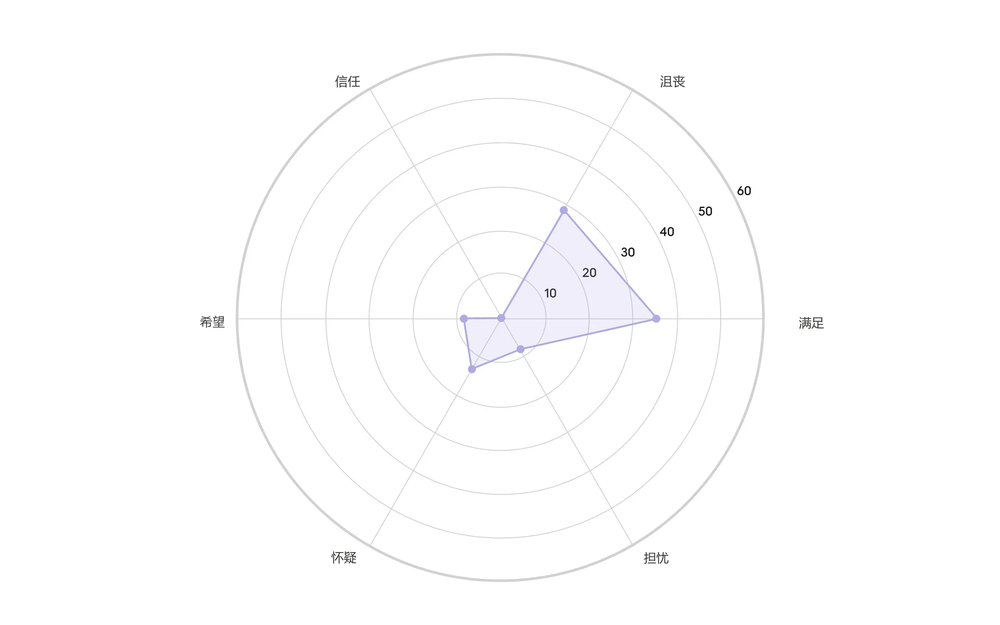
科学家在访谈中报告的六大情绪——希望、满足、沮丧、担忧、怀疑和信任——的强度。轴表示参与者在访谈中表达该情绪的访谈百分比。我们分析了样本中六个最突出的科学学科中的这些情绪。 科学家在访谈中报告的六大情绪——希望、满足、沮丧、担忧、怀疑和信任——的强度。轴表示参与者在访谈中表达该情绪的访谈百分比。我们分析了样本中六个最突出的科学学科中的这些情绪。
科学家在访谈中报告的六大情绪——希望、满足、沮丧、担忧、怀疑和信任——的强度。轴表示参与者在访谈中表达该情绪的访谈百分比。我们分析了样本中六个最突出的科学学科中的这些情绪。
 科学家在访谈中报告的六大情绪——希望、满足、沮丧、担忧、怀疑和信任——的强度。轴表示参与者在访谈中表达该情绪的访谈百分比。我们分析了样本中六个最突出的科学学科中的这些情绪。
大多数科学领域报告了高水平的满足感，但沮丧模式各不相同：物理学家和数据科学家表现出更高的沮丧度，而化学和机械工程师则几乎不表现出沮丧。这可能反映了计算领域与实验领域在将 AI 融入核心研究工作流程方式上的差异：工作内容需要与现实世界互动的科学家可能尚未尝试将 AI 用于其核心科学实验。所有领域的信任度都相对较低，表明无论学科如何，都存在广泛的可靠性担忧。与对 AI 影响表达高度担忧的创意专业人士不同，科学家表现出相对较低的担忧水平。这与他们所表达的、关于 AI 完成假设生成和实验任务能力的挫败感是一致的。
科学家总体上并不担心 AI 导致工作被取代。一些人指出了抗拒数字化的隐性知识，一位微生物学家解释说：“我曾研究过一种细菌菌株，当细胞呈现特定颜色时，你必须启动各种步骤。颜色差异必须亲眼看到才能理解，[说明]也很少被记录在任何地方。”其他人则强调研究决策本质上属于人类，一位生物工程师表示：“实验和研究……本质上也是由我决定的”，并指出“研究过程的某些部分很不幸地就是与 AI 不兼容，尽管它们恰恰是最便于自动化的部分，比如运行实验。”
外部约束也构成了 AI 取代的障碍——在涉密环境中工作的研究人员指出，“有许多‘该做与不该做’的规则，涉及大量面向安全的流程，必须在组织允许我们使用智能体框架甚至 LLM 之前就位。”一位管理有限资源的机械工程师解释说，虽然“AI 擅长提出实验设计”，但实际上“我的大部分研究都受预算、时间、样本限制，所以‘理想’的设计并不总是可行的。”尽管如此，监管合规约束、对技能退化的担忧以及成本障碍各自只出现在不到 10% 的访谈中。
我希望有一个 AI，能让人感觉像是一位宝贵的研究伙伴……能带来一些新的东西。
91% 的科学家表示希望在其研究中获得更多 AI 帮助，即使他们认为当今的产品并不完全符合要求。大约三分之一的人设想主要在写作任务上获得帮助，但大多数人希望在研究的方方面面获得支持：评判实验设计、访问科学数据库和运行分析。一个共同的愿望是让 AI 能够产生新的科学想法。一位医学科学家说：“我希望 AI 能……帮助生成或支持假设，或者寻找对人类来说不是显而易见的新的相互作用/关系。”另一位科学家呼应了这种感受，他说：“我希望有一个 AI，能让人感觉像是一位宝贵的研究伙伴……能带来一些新的东西。”
科学家在访谈中报告的六大情绪——希望、满足、沮丧、担忧、怀疑和信任——的强度。轴表示参与者在访谈中表达该情绪的访谈百分比。我们分析了样本中六个最突出的科学学科中的这些情绪。
大多数科学领域报告了高水平的满足感，但沮丧模式各不相同：物理学家和数据科学家表现出更高的沮丧度，而化学和机械工程师则几乎不表现出沮丧。这可能反映了计算领域与实验领域在将 AI 融入核心研究工作流程方式上的差异：工作内容需要与现实世界互动的科学家可能尚未尝试将 AI 用于其核心科学实验。所有领域的信任度都相对较低，表明无论学科如何，都存在广泛的可靠性担忧。与对 AI 影响表达高度担忧的创意专业人士不同，科学家表现出相对较低的担忧水平。这与他们所表达的、关于 AI 完成假设生成和实验任务能力的挫败感是一致的。
科学家总体上并不担心 AI 导致工作被取代。一些人指出了抗拒数字化的隐性知识，一位微生物学家解释说：“我曾研究过一种细菌菌株，当细胞呈现特定颜色时，你必须启动各种步骤。颜色差异必须亲眼看到才能理解，[说明]也很少被记录在任何地方。”其他人则强调研究决策本质上属于人类，一位生物工程师表示：“实验和研究……本质上也是由我决定的”，并指出“研究过程的某些部分很不幸地就是与 AI 不兼容，尽管它们恰恰是最便于自动化的部分，比如运行实验。”
外部约束也构成了 AI 取代的障碍——在涉密环境中工作的研究人员指出，“有许多‘该做与不该做’的规则，涉及大量面向安全的流程，必须在组织允许我们使用智能体框架甚至 LLM 之前就位。”一位管理有限资源的机械工程师解释说，虽然“AI 擅长提出实验设计”，但实际上“我的大部分研究都受预算、时间、样本限制，所以‘理想’的设计并不总是可行的。”尽管如此，监管合规约束、对技能退化的担忧以及成本障碍各自只出现在不到 10% 的访谈中。
我希望有一个 AI，能让人感觉像是一位宝贵的研究伙伴……能带来一些新的东西。
91% 的科学家表示希望在其研究中获得更多 AI 帮助，即使他们认为当今的产品并不完全符合要求。大约三分之一的人设想主要在写作任务上获得帮助，但大多数人希望在研究的方方面面获得支持：评判实验设计、访问科学数据库和运行分析。一个共同的愿望是让 AI 能够产生新的科学想法。一位医学科学家说：“我希望 AI 能……帮助生成或支持假设，或者寻找对人类来说不是显而易见的新的相互作用/关系。”另一位科学家呼应了这种感受，他说：“我希望有一个 AI，能让人感觉像是一位宝贵的研究伙伴……能带来一些新的东西。”
展望未来
这次初步测试表明，Anthropic Interviewer 在大规模应用中显示出前景——我们得以与各类专业人士进行了 1,250 次访谈，以了解他们对工作中使用 AI 的感受。使用传统的“人工”访谈方法，对这么多参与者进行研究将既昂贵又耗时。 但 Anthropic Interviewer 的意义超越了方法论：它从根本上改变了我们能就 AI 在社会中的角色提出和回答什么问题，也改变了关于任何主题的访谈能够以这种新规模进行的方式。我们借助 Anthropic Interviewer 开展大规模有意义研究的努力才刚刚开始。此前，我们只能了解人们在聊天窗口内如何使用 Claude。我们不知道人们对使用 AI 的_感受_，不知道他们想_改变_与这项技术互动的哪些方面，也不知道他们_设想 AI 在自己生活中扮演什么未来角色_。 这项初步调查的发现为我们提供了超越经济指数工作的新洞见，帮助我们理解人们如何在工作中使用 AI。我们正在与经济咨询委员会和高等教育咨询委员会分享这些初步发现以供讨论。随着我们继续这项研究，我们将公开发布试点结果，以及这些发现如何为我们的未来工作提供参考。 Anthropic Interviewer 是我们让人类声音在 AI 模型开发对话中居于中心地位的最新一步——这项工作始于我们的集体宪法 AI（Collective Constitutional AI）研究，该研究收集公众观点以塑造 Claude 的行为。这些对话可以帮助我们改进 Claude 本身的性格和训练过程，并为 Anthropic 倡导和采纳的未来政策提供依据。以下是我们为探索与特定社区合作、帮助我们开发由其专业知识加持的 AI 而采取的一些实际步骤： * 创意工作者。 我们正在支持展览、工作坊和活动的开展，以理解 AI 如何增强创造力。我们与领先的文化机构建立了合作，包括 LAS 艺术基金会、森美术馆和泰特美术馆，以及与 Rhizome 和 Socratica 等创意社区的合作。此外，我们还在与热门创意工具背后的公司合作，探索 Claude 如何通过模型上下文协议（Model Context Protocol）增强创意工作者的工作。 * 科学家。 我们正在与AI for Science 受资助者合作，以理解 AI 如何最好地服务于他们的研究。利用 Anthropic Interviewer，我们正在收集科学家对 AI 的看法以及他们对项目的期望（我们还将使用我们的隐私保护分析工具来评估他们的 Claude 对话是否符合这些期望）。定量与定性数据的结合将帮助我们既为科学家改进 Claude，也衡量我们资助的影响。 * 教师。 我们最近与美国教师联合会（American Federation of Teachers，AFT）合作，在 AI 能力日益强大的时代重塑教师培训。该项目旨在为 40 万名教师提供 AI 教育支持，并将他们的视角引入 AI 系统的开发。此外，我们还预览了 Anthropic Interviewer 关于 AI 如何改变 Anthropic 软件工程工作的一些发现。分享我们自己工作场所转型的定性故事，让我们发现软件工程师与教师之间有很多共同点，把大家拉到同一张桌前，集思广益我们究竟想要什么样的 AI 引发的工作转型。
借助 Anthropic Interviewer，我们可以开展有针对性的研究，为具体政策提供依据；开展参与式研究，让不同社区参与到关于 AI 的对话中；并开展定期研究，追踪人与 AI 之间不断演变的关系。
参与方式
我们将继续使用 Anthropic Interviewer 来更好地理解人们如何设想 AI 在其生活和工作中扮演的角色。为此，我们正在启动一个公开的试点访谈，探索是什么经历、价值观和需求驱动着人们对 AI 未来角色的愿景。 准备好分享你的观点了吗？ 你可以通过这个链接参加一个 10-15 分钟的访谈，参与这项研究。我们计划将这项研究的匿名化洞见作为我们社会影响研究的一部分进行分析，并发布一份关于这些数据洞见的报告。有关这项研究的更多信息，请参阅下面的常见问题解答部分。
结论与局限
我们与 1,250 名专业人士的访谈揭示了一个正在积极协商其与 AI 关系的劳动力群体。我们的参与者通常保留对其职业身份至关重要的任务，同时将日常工作委托出去以换取生产力提升。创意工作者在同行污名和经济焦虑中拥抱 AI 的效率，而科学家则对委托给 AI 的研究任务保持审慎。 我们开展这项研究，是为了理解 AI 对人们生活的影响，超越聊天窗口内发生的事情。与所有定性分析一样，我们对这些访谈的解读反映了我们选择提出的问题以及我们在数据中寻找的模式。通过公开这一大规模访谈记录数据集，我们希望推动对人类与 AI 关系如何演变的集体理解。而通过大规模部署 Anthropic Interviewer，我们可以在人们使用 AI 的体验与我们如何开发 AI 之间建立一个反馈回路——目标是构建反映公众观点和需求的 AI 系统。
局限
我们对 Anthropic Interviewer 的初步使用存在一些重要的局限，影响了我们发现的适用范围和可推广性。我们的发现应被解读为 AI 对工作影响的早期信号，而非关于其对专业实践和身份长期影响的最终结论。 * 选择偏差。 由于参与者是通过众包平台招募的，我们研究中参与者的经历可能与普通劳动者的经历存在显著差异，使回答偏向于更积极或更有经验的视角。 * 需求特征。 参与者知道他们是在被一个 AI 系统访谈关于其 AI 使用情况，这可能会改变他们参与的意愿，或改变他们给出的回答类型（与接受人类访谈相比）。 * 静态分析。 我们捕捉到了专业人士当前 AI 使用情况和态度的快照，但凭借这些数据，我们无法追踪这些关系随时间的发展，也无法追踪最初的热情如何随着长期使用而改变。 * 情绪分析。 由于 Anthropic Interviewer 仅基于文本，无法读取语调、面部表情或肢体语言，它可能会遗漏影响受访者陈述含义的情绪线索。 * 自我报告与客观测量。 我们在上文指出，参与者对其 AI 使用情况的描述可能与其实际做法存在差异（智能手机使用已被发现正是如此）。这可能是由于社会期望偏差、记忆不准确，或围绕 AI 披露的工作场所规范不断演变所致。 * 事实上，我们的访谈数据在与实际使用数据对比时揭示了关键差异。感知与实践之间的这种差距强化了自我报告固有的模糊性：例如，访谈回答可能捕捉到理想化的使用情况或社会期望效应。理解这些差异对于解读这类研究的发现至关重要。 * 研究者解读。 与所有定性研究一样，我们的分析反映了我们作为研究者的自身兴趣和视角。尽管我们使用了系统的方法来识别模式，但不同的研究者可能会强调这些访谈的不同方面，或得出不同的结论。 * 全球可推广性。 我们的样本主要反映西方劳动者，而世界各地对 AI 的文化态度、工作场所动态和职业身份很可能存在显著差异。 * 非实验性研究。 尽管许多参与者报告了生产力提升和质量改善，但我们无法确定 AI 的使用是否直接_导致_了这些结果，或其他因素在多大程度上起了作用。
贡献与致谢
Kunal Handa 领导了这个项目，设计并制作了 Anthropic Interviewer 的原型，执行了调查、访谈和数据分析，绘制了图表，并撰写了这篇博文。Michael Stern 主导了 Anthropic Interviewer 在 Claude.ai 中的实现，管理了项目时间线，并全程提供反馈。Saffron Huang 领导了 Anthropic Interviewer 的公开试点。Jerry Hong 主导了 Anthropic Interviewer 的视觉设计，并为技术图表做出了贡献。Esin Durmus 为实验设计做出了贡献并提供了关键反馈。Miles McCain 共同主导了 Anthropic Interviewer 原型底层技术基础设施的实现。Grace Yun、AJ Alt 和 Thomas Millar 在 Claude.ai 中实现了 Anthropic Interviewer，并为公开试点提供了必要的技术基础设施。Alex Tamkin 在项目早期迭代中提供了关键反馈。Jane Leibrock 为 Anthropic Interviewer 的全部方法论做出了贡献。Stuart Ritchie 为博文的框架和撰写做出了贡献。Deep Ganguli 提供了关键的研究指导、反馈和组织支持。所有作者全程提供了详细的指导和反馈。 此外，我们感谢 Sally Aldous、Drew Bent、Shan Carter、Jack Clark、Miriam Chaum、Jake Eaton、Matt Galivan、Savina Hawkins、Sarah Heck、Hanah Ho、Mo Julapalli、Matthew Kearney、Mike Krieger、Chelsea Larsson、Joel Lewenstein、Jennifer Martinez、Wes Mitchell、Jared Mueller、Christopher Nulty、Adam Pearce、Sarah Pollack、Ankur Rathi、Drew Roper、David Saunders、Kevin Troy、Molly Villagra、Brett Wittmershaus 和 Casey Yamaguma 提供的有益想法、讨论、反馈和支持。我们也感谢 Matthew Conlen、Deb Roy 和 Diyi Yang 的评论、讨论和反馈。
引用
如果你想引用这篇文章，可以使用以下 BibTeX 键：
@online{handa2025interviewer,
author = {Kunal Handa and Michael Stern and Saffron Huang and Jerry Hong and Esin Durmus and Miles McCain and Grace Yun and AJ Alt and Thomas Millar and Alex Tamkin and Jane Leibrock and Stuart Ritchie and Deep Ganguli},
title = {Introducing Anthropic Interviewer: What 1,250 professionals told us about working with AI},
date = {2025-12-04},
year = {2025},
url = {https://anthropic.com/research/anthropic-interviewer},
}
附录
参与者使用 Anthropic Interviewer 的体验
访谈结束后，我们调查了参与者对访谈体验的反馈。我们询问了：(1) 您对这次对话的满意程度如何？，(2) 这次对话在多大程度上捕捉到了您对{该领域}的想法？（两者均采用 1-7 李克特量表），以及 (3) 您会向他人推荐这种访谈形式吗？（是/否）。 我们发现参与者对 Anthropic Interviewer 的评价非常积极。97.6% 的参与者将其满意度评为 5 分或以上，其中 49.6% 给出了最高评分。同样，96.96% 的人认为对话很好地捕捉了他们的想法（5-7 分）。99.12% 的参与者表示会向他人推荐这种访谈形式。
分享你的观点：常见问题解答
1. 我们如何访问这项研究？ 从今天开始，如果你是两周前注册的 Free、Pro 或 Max 版 Claude.ai 订阅用户，你可能会在 Claude.ai 中看到一个邀请你参与的弹窗。你可以通过以下地址访问：https://claude.ai/interviewer。这项研究将开放一周。 2. 这项研究会问我什么？ 我们将使用 Anthropic Interviewer 询问你对 AI 在你生活中角色的愿景、哪些经历、价值观和需求塑造了这一愿景，以及什么可能帮助或阻碍这一愿景。 3. 你们将如何使用这些数据？ 我们将把这项研究的洞见作为我们社会影响研究的一部分进行分析，发布我们的发现，并以此改进我们的模型和服务，使其反映我们所学到的东西。我们通过这项研究收集的数据将被视为反馈，并按照我们的隐私政策处理。我们还可能在已发布的发现中包含匿名化的回答。了解更多。 4. 为什么我在 Claude.ai 中没有看到 Anthropic Interviewer 的邀请？ 该访谈仅对注册超过两周的现有 Claude.ai Free、Pro 和 Max 用户开放。 如果你有疑问，可以通过我们帮助中心右下角的消息图标与我们联系。
相关内容
了解更多关于 Claude 数学能力的信息
Claude 的一个未发布研究版本在与黎曼猜想相关的问题上取得了进展。它改进了一个长期存在的下界：满足该猜想的黎曼 zeta 函数零点的比例，从 41.6% 提高到 67.2%。 阅读更多
用 Claude 发现密码学弱点
密码学算法。第一次攻击显著削弱了 HAWK——一种为未来量子计算机能够破解现有标准的时代而设计的数字签名方案。第二次攻击确定了一种攻击减轮 AES（使用最广泛的对称密码）的新方法。 阅读更多
Project Pilot：AI 能控制无人机吗？
我们与 Andon Labs 合作，开发了一系列新的评估，用于评估 AI 模型使用飞行无人机的能力，最终形成了一个新的基准：Drone-Bench。 阅读更多
▸ 英文原文（点击展开）
Introducing Anthropic Interviewer: What 1,250 professionals told us about working with AI
- Category: Societal Impacts
- Source: https://www.anthropic.com/research/anthropic-interviewer
Societal Impacts
Introducing Anthropic Interviewer: What 1,250 professionals told us about working with AI
Dec 4, 2025
We’re launching a new tool, Anthropic Interviewer, to help understand people’s perspectives on AI. In this research post, we introduce the tool, describe a test of it on a sample of professionals, and discuss our early findings. We also discuss future work in this direction that we can now explore with the development of this tool and through partnerships with creatives, scientists, and teachers.
Introduction
Millions of people now use AI every day. As a company developing AI systems, we want to know how and why they’re doing so, and how it affects them. In part, this is because we want to use people’s feedback to develop better products—but it’s also because understanding people’s interactions with AI is one of the great sociological questions of our time. We recently designed a tool to investigate patterns of AI use while protecting our users’ privacy. It enabled us to analyze changing patterns of AI use across the economy. But the tool only allowed us to understand what was happening within conversations with Claude. What about what comes afterwards? How are people actually using Claude’s outputs? How do they feel about it? What do they imagine the role of AI to be in their future? If we want a comprehensive picture of AI’s changing role in people’s lives, and to center humans in the development of models, we need to ask people directly. Such a project would require us to run many hundreds of interviews. Here, we enlisted AI to help us do so. We built an interview tool called Anthropic Interviewer. Powered by Claude, Anthropic Interviewer runs detailed interviews automatically at unprecedented scale, feeding its results back to human researchers for analysis. This is a new step in understanding the wants and needs of our users, as well as gathering data for the analysis of AI’s societal and economic impacts. To test Anthropic Interviewer, we had it run 1,250 interviews with professionals—the general workforce (N=1,000), scientists (N=125), and creatives (N=125)—about their views on AI. We’re publicly releasing all interview data from this initial test (with participant consent) for researchers to explore; we provide our own analysis below. Briefly, here are some examples of what we found: * In our sample, people are optimistic about the role AI plays in their work. Positive sentiments characterized the majority of topics discussed. However, a small number of topics such as educational integration, artist displacement, and security concerns, came with more pessimistic outlooks. * People from the general workforce want to preserve tasks that define their professional identity while delegating routine work to AI. They envision futures where routine tasks are automated and their role shifts to overseeing AI systems. * Creatives are using AI to increase their productivity despite peer judgement and anxiety about the future. They are navigating both the immediate stigma of AI use in creative communities and deeper concerns about economic displacement and the erosion of human creative identity. * Scientists want AI partnership but can't yet trust it for core research. Scientists uniformly expressed a desire for AI that could generate hypotheses and design experiments. But at present, they confined their actual use to other tasks like writing manuscripts or debugging analysis code.
The different topics people discussed in their interviews with Anthropic Interviewer. Across all three samples we studied—the general workforce, scientists, and creatives—participants expressed predominantly positive sentiments about AI’s impact on their professional activities. Certain topics did introduce pause, particularly around questions of personal control, job displacement, and autonomy. In this diagram, topics are roughly ordered from more pessimistic to more optimistic.
The different topics people discussed in their interviews with Anthropic Interviewer. Across all three samples we studied—the general workforce, scientists, and creatives—participants expressed predominantly positive sentiments about AI’s impact on their professional activities. Certain topics did introduce pause, particularly around questions of personal control, job displacement, and autonomy. In this diagram, topics are roughly ordered from more pessimistic to more optimistic.
The different topics people discussed in their interviews with Anthropic Interviewer. Across all three samples we studied—the general workforce, scientists, and creatives—participants expressed predominantly positive sentiments about AI’s impact on their professional activities. Certain topics did introduce pause, particularly around questions of personal control, job displacement, and autonomy. In this diagram, topics are roughly ordered from more pessimistic to more optimistic.
General workforce
Pessmistic| Optimistic
---|---
Career adaptation. Trucking dispatcher: “I'm always trying to figure out things that humans offer to the industry that can't be automated and really hone in on that aspect like the personalized human interactions. However, that is not something that I think will be necessary in the long run. I'm still trying to figure out what skills would be good to work on that AI can't ‘take over.’”| Societal perspectives. Office assistant: “It's a tool to me like a computer was, or a type writer was in the day—computers didn't get rid of mathematicians, they just made them able to do more and that is where I see AI going in the best possible future.”
Writing independence. Salesperson: “I hear from colleagues that they can tell when email correspondence is AI generated and they have a slightly negative regard for the sender. They feel slighted that the sender is ‘too lazy’ to send them a personal note and push it onto AI to do it.”| Educational integration. Special education teacher: “I am hoping that AI will be a more collaborative partner that will help me better manage my time and help me expand creatively so I can offer my students a wide variety of activities and assignments that I may not have been able to come up with on my own.”
Example quotations from professionals in the general workforce, organized by topic. This research aims to both unpack the optimism and navigate the underlying anxieties to better understand how AI is actually reshaping work across different professional contexts.
Creatives
Pessimistic| Optimistic
---|---
Control boundaries. Gamebook writer: “During these storytelling sessions, I would say that there's only the illusion of collaboration for the most part… there’s rarely a point where I’ve really felt like the AI is driving the creative decision-making.”| Workflow automation. Social media manager: “I’m less stressed, honestly. It has created a ton of efficiency for me so I can focus on my favorite aspects of the job (filming and editing)”.
Writer displacement. Creative fiction writer: “A novel written by AI might have a great plot and be technically brilliant. But it won’t have the deeper nuances that only a human can weave throughout the story.”| Music production. Music producer: “Sometimes, when it comes time to add lyrics, I’ll ask ChatGPT or Claude for lists of interesting word pairings. Just getting a long list to try out over the instrumental often leads to finding a hook or at least a seed for a song idea.”
Example quotations from creatives, organized by topic.
Scientists
Pessimistic| Optimistic
---|---
Security concerns. Medical scientist: “Our confidence in AI just isn’t high enough at the moment to trust it with our data. We’re also a commercial entity so there’s a bit of concern over confidentially with data that we might share with an AI system.”| Research assistance. Molecular biologist: “If AI could integrate and normalize all this data in a single repository, it could be a very exciting thing for biological discovery. You could see how expression dynamics change across cell models, tissue types, disease states, and more.”
Content verification. Economist:* “What I would really like from an AI would be the ability to accurately grab information, summarise it and use it to write the core of a funding application. AI generally writes well; the problem now is that I just can’t rely on it not hallucinating, or to put it bluntly, lying.”| *Code development. Food scientist:“ Honestly I wouldn’t have known how to help my student with her code if something was off without AI tools.”
Example quotations from scientists, organized by topic.
Method
This initial test explored how workers integrate AI into their professional practice and how they feel about its role in their future. We ran interviews to produce qualitative data, and supplemented them with quantitative data from surveys where participants answered questions on their behavioral and occupational backgrounds. We also had a separate AI analysis tool read the interview transcripts and cluster together emergent, overarching themes from the unstructured data—for example, on the percentage of participants who mentioned a specific topic or expressed a specific view in their interview.
Participants
We used Anthropic Interviewer to conduct interviews with 1,250 professionals. We intend for the tool to interview general Claude.ai users, but for this initial test, we sought participants working across a range of professions and engaged them through crowdworker platforms (all participants had an occupation other than crowdworking that was their main job). 1,000 of our participants were recruited from a general sample of occupations (that is, we did not select participants from specific jobs). Of that group, the largest subgroups came from educational instruction (17%), computer and mathematical occupations (16%), and arts, design, entertainment, and media (14%). We also recruited two specialist samples of 125 participants each. The first was from creative professions: predominantly writers and authors (48% of the sample), and visual artists (21%), with smaller groups of filmmakers, designers, musicians, and craft workers. The second was from science, which included physicists (9%), chemists (9%), chemical engineers (7%), and data scientists (6%), with representation across 50+ other distinct scientific disciplines. We chose to add these two specialist subgroups because these represent professional domains where AI’s role remains contested and is rapidly evolving. We hypothesized that creatives and scientists would reveal distinct patterns of AI adoption and professional concerns. All participants provided informed consent for us to analyze their interview data for research purposes and for us to release the transcripts publicly.
How Anthropic Interviewer works
Anthropic Interviewer operates in three stages: planning, interviewing, and analysis. Below, we describe each of them in turn.
The three stages of Anthropic Interviewer's process.
Planning
In this phase, Anthropic Interviewer creates an interview rubric that allows it to focus on the same overall research questions across hundreds or thousands of interviews, but which is still flexible enough to accommodate variations and tangents that might occur in individual interviews. We developed a system prompt—a set of overall instructions for how the AI model is to work—to give Anthropic Interviewer its methodology. This was where we included hypotheses regarding each sample, as well as best practices for creating an interview plan (this was established in collaboration with our user research team). After putting the system prompt in place, Anthropic Interviewer used its knowledge of our research goal (see section below) to generate specific questions and a planned conversation flow. There was then a review phase where human researchers collaborated with Anthropic Interviewer to make any necessary edits to finalize the plan.
Interviewing
Anthropic Interviewer then conducted real-time, adaptive interviews following its interview plan. At this stage, we included a system prompt to instruct Anthropic Interviewer how to use best practices for interviews.
The interviews conducted by Anthropic Interviewer appeared on Claude.ai and lasted about 10-15 minutes with each participant.
The interviews were conducted on an interface like this on claude.ai (above is the module now live for users).
Analysis
Once interviews were complete, a human researcher collaborated with Anthropic Interviewer to analyze the transcripts. Anthropic Interviewer’s analysis step takes as input the initial interview plan and outputs answers to the research questions alongside illustrative quotations. At this stage, we also used our automated AI analysis tool to identify emergent themes and quantify their prevalence across participants.
Research goals
As described above, Anthropic Interviewer was made aware of the research goals through its system prompt, and ran its interviews in such a way as to address them. Note that, in this initial study, our main intention was to perform a practical test of Anthropic Interviewer; the goals below nonetheless provided interesting data which we analyze below. The following were the main research goals for each subsample: * General workforce. “Understand how individuals integrate AI tools into their professional workflows, exploring usage patterns, task preferences, and interaction styles to gain insights into the evolving relationship between humans and AI in workplace contexts.” * Creatives. “To understand how creative professionals currently integrate AI into their creative processes, their experiences with AI’s impact on their work, and their vision for the future relationship between AI and human creativity.” * Scientists. “To understand how AI systems integrate into scientists' daily research workflows, examining their current usage patterns, perceived value, trust levels, and barriers to adoption across different stages of the scientific process.”
Results
Below we discuss what we discovered in our interviews and provide quantitative data from our survey and thematic analysis.
AI’s impact in the general workforce
Overall, the members of our general sample of professionals described AI as a boost to their productivity. In the survey, 86% of professionals reported that AI saves them time and 65% said they were satisfied with the role AI plays in their work.
One theme that surfaced is how workplace dynamics affect the adoption of AI. 69% of professionals mentioned the social stigma that can come with using AI tools at work—one fact-checker told Anthropic Interviewer: “A colleague recently said they hate AI and I just said nothing. I don’t tell anyone my process because I know how a lot of people feel about AI.”
Whereas 41% of interviewees said they felt secure in their work and believed human skills are irreplaceable, 55% expressed anxiety about AI’s impact on their future. 25% of the group expressing anxiety said they set boundaries around AI use (e.g. an educator always creating lesson plans themselves), while 25% adapted their workplace roles, taking on additional responsibilities or pursuing more specialized tasks.
Approaches to AI use varied widely. One data quality manager deliberately chose learning over automation: “I try to think about it like studying a foreign language—just using a translator app isn’t going to teach you anything, but having a tutor who can answer questions and customize for your needs is really going to help.” A marketer took a flexible approach: “I am trying to diversify while keeping a strong niche.” An interpreter was already preparing to leave the field entirely: “I believe AI will eventually replace most interpreters... so I’m already preparing for a career switch, possibly by getting a diploma and getting into a different trade.” Notably, only 8% of professionals expressed anxiety without any clear remediation plan.
Intensity of the top six emotions—hope, worry, satisfaction, frustration, relief, and trust—surfaced during interviews with professionals in the general workforce from six major occupational categories from the ONET database. Each axis represents one emotion, with distance from the center indicating the percentage of interviews in which participants expressed that emotion; points farther from the center reflect higher prevalence. We analyzed these emotions across the six most prominent occupational categories in our sample.
Intensity of the top six emotions—hope, worry, satisfaction, frustration, relief, and trust—surfaced during interviews with professionals in the general workforce from six major occupational categories from the ONET database. Each axis represents one emotion, with distance from the center indicating the percentage of interviews in which participants expressed that emotion; points farther from the center reflect higher prevalence. We analyzed these emotions across the six most prominent occupational categories in our sample.
Intensity of the top six emotions—hope, worry, satisfaction, frustration, relief, and trust—surfaced during interviews with professionals in the general workforce from six major occupational categories from the ONET database. Each axis represents one emotion, with distance from the center indicating the percentage of interviews in which participants expressed that emotion; points farther from the center reflect higher prevalence. We analyzed these emotions across the six most prominent occupational categories in our sample.
Intensity of the top six emotions—hope, worry, satisfaction, frustration, relief, and trust—surfaced during interviews with professionals in the general workforce from six major occupational categories from the ONET database. Each axis represents one emotion, with distance from the center indicating the percentage of interviews in which participants expressed that emotion; points farther from the center reflect higher prevalence. We analyzed these emotions across the six most prominent occupational categories in our sample.
Intensity of the top six emotions—hope, worry, satisfaction, frustration, relief, and trust—surfaced during interviews with professionals in the general workforce from six major occupational categories from the ONET database. Each axis represents one emotion, with distance from the center indicating the percentage of interviews in which participants expressed that emotion; points farther from the center reflect higher prevalence. We analyzed these emotions across the six most prominent occupational categories in our sample.
Intensity of the top six emotions—hope, worry, satisfaction, frustration, relief, and trust—surfaced during interviews with professionals in the general workforce from six major occupational categories from the ONET database. Each axis represents one emotion, with distance from the center indicating the percentage of interviews in which participants expressed that emotion; points farther from the center reflect higher prevalence. We analyzed these emotions across the six most prominent occupational categories in our sample.
We also classified the intensity of different emotions exhibited within professionals’ interviews (see figure above). Different professions exhibited remarkably uniform emotional profiles characterized by high levels of satisfaction. However, this was coupled with frustration, suggesting professionals are finding AI useful while encountering significant implementation challenges.
Augmentation versus automation
Augmentation versus automation in professionals' self-reports to Anthropic Interviewer compared with observed Claude usage in the Anthropic Economic Index. Professionals described their AI use as 65% augmentative and 35% automative, while actual Claude conversations showed 47% augmentation and 49% automation. Economic Index percentages do not sum to 100% as some interactions were unclassified.
In a previous analysis, we categorized AI uses into either augmentation (where AI collaborates with a user to perform a task), or automation (where AI directly performs tasks). In the Anthropic Interviewer data, 65% of participants described AI’s primary role as augmentative; 35% described it as automative. Notably, this differed from our latest analysis of how people use Claude, which showed a much more even split: 47% of tasks involved augmentation and 49% automation. There are multiple potential explanations for this difference:
* There could be sample differences between Anthropic Interviewer study respondents and the users in our previous study;
* People’s conversations on Claude may look more automative than they actually are—users might refine or adapt Claude’s outputs after the chat ends;
* The participants might use different AI providers for different tasks;
* Self-reported interaction styles might diverge from real-world usage;
* Professionals might perceive their AI use as more collaborative than their Claude conversation patterns indicate.
Professionals envisioned a future with both augmentation and automation—the automation of routine, administrative tasks with the maintenance of human oversight. 48% of interviewees considered transitioning their careers toward positions that focus on managing and overseeing AI systems rather than performing direct technical work. ...if I use AI and up my skills with it, it can save me so much time on the admin side which will free me up to be with the people. A pastor said that “...if I use AI and up my skills with it, it can save me so much time on the admin side which will free me up to be with the people”. They also emphasized the importance of “good boundaries”, and avoiding becoming “so dependent on AI that I can't live without [it] or do what I'm called to do.” A communications professional said: “I believe the majority of my job will probably be overtaken by AI one day. I think my role will eventually become focused around prompting, overseeing, training and quality-controlling the models rather than actually doing the work myself”. Professionals who were currently barred from using AI at work—for example, some lawyers, accountants, and healthcare workers—anticipated policy changes that would let them automate many tasks in the future.
AI’s impact on creative professions
Our sample of creative professionals also reported that AI made them more productive. 97% reported that AI saved them time and 68% said it increased their work’s quality. One novelist explained “I feel like I can write faster because the research isn’t as daunting,” while a web content writer reported they’ve “gone from being able to produce 2,000 words of polished, professional content to well over 5,000 words each day.” A photographer noted how AI handled routine editing tasks—reducing turnaround time from “12 weeks to about 3”—allowing them to “intentionally make edits and tweaks that I may have missed before or not had time for.”
Similarly to the general sample, 70% of creatives mentioned trying to manage peer judgment around AI use. One map artist said: “I don't want my brand and my business image to be so heavily tied to AI and the stigma that surrounds it.”
Certain sectors of voice acting have essentially died due to the rise of AI.
Economic anxiety appeared throughout creatives’ interviews. A voice actor stated that: “Certain sectors of voice acting have essentially died due to the rise of AI, such as industrial voice acting.” A composer worried about platforms that might “leverage AI tech along with their publishing libraries [to] infinitely generate new music,” flooding markets with cheap alternatives to human-produced music. Another artist captured similar concerns: “Realistically, I’m worried I'll need to keep using generative AI and even start selling generated content just to keep up in the marketplace so I can make a living.” A creative director said: “I fully understand that my gain is another creative’s loss. That product photographer that I used to have to pay $2,000 per day is now not getting my business.” (Note that Claude does not produce images, videos, or music—participants’ expressed anxieties are therefore about AI writ large, and not specific to Claude).
All 125 participants mentioned wanting to remain in control of their creative outputs. Yet this boundary proved unstable in practice: Many participants acknowledged moments where AI drove creative decisions. One artist admitted: “The AI is driving a good bit of the concepts; I simply try to guide it… 60% AI, 40% my ideas”. A musician said: “I hate to admit it, but the plugin has most of the control when using this.”
Intensity of the top six emotions—hope, worry, satisfaction, frustration, relief, and trust—reported during interviews with creative professionals. The axis denotes the percentage of interviews in which the participant expressed the given emotion. We analyzed these emotions across the six most prominent creative disciplines in our sample.
Intensity of the top six emotions—hope, worry, satisfaction, frustration, relief, and trust—reported during interviews with creative professionals. The axis denotes the percentage of interviews in which the participant expressed the given emotion. We analyzed these emotions across the six most prominent creative disciplines in our sample.
Intensity of the top six emotions—hope, worry, satisfaction, frustration, relief, and trust—reported during interviews with creative professionals. The axis denotes the percentage of interviews in which the participant expressed the given emotion. We analyzed these emotions across the six most prominent creative disciplines in our sample.
Intensity of the top six emotions—hope, worry, satisfaction, frustration, relief, and trust—reported during interviews with creative professionals. The axis denotes the percentage of interviews in which the participant expressed the given emotion. We analyzed these emotions across the six most prominent creative disciplines in our sample.
Intensity of the top six emotions—hope, worry, satisfaction, frustration, relief, and trust—reported during interviews with creative professionals. The axis denotes the percentage of interviews in which the participant expressed the given emotion. We analyzed these emotions across the six most prominent creative disciplines in our sample.
Intensity of the top six emotions—hope, worry, satisfaction, frustration, relief, and trust—reported during interviews with creative professionals. The axis denotes the percentage of interviews in which the participant expressed the given emotion. We analyzed these emotions across the six most prominent creative disciplines in our sample.
Disciplines exhibited divergent emotional profiles as seen in the figure above: game developers and visual artists reported high satisfaction, paradoxically paired with elevated worry. Designers showed an inverse pattern dominated by frustration with notably low satisfaction. Across all disciplines, trust remained consistently low, suggesting shared uncertainty about AI’s long-term implications for creative work. The tension between satisfaction and worry may highlight the position of creative professionals who simultaneously embrace AI tools while grappling with concerns about the future of human creativity. The wide dispersion across the emotional spectrum confirmed that different creative professions experienced AI integration through very different emotional lenses.
AI’s impact on scientific work
Our interviews with researchers in chemistry, physics, biology, and computational fields identified that in many cases, AI could not yet handle core elements of their research like hypothesis generation and experimentation. Scientists primarily reported using AI for other tasks like literature review, coding, and writing. This is an area where AI companies, including Anthropic, are working to improve their tools and capabilities.
Trust and reliability concerns were the primary barrier in 79% of interviews; the technical limitations of current AI systems appeared in 27% of interviews. One information security researcher noted: “If I have to double check and confirm every single detail the [AI] agent is giving me to make sure there are no mistakes, that kind of defeats the purpose of having the agent do this work in the first place.” A mathematician echoed this frustration: “After I have to spend the time verifying the AI output, it basically ends up being the same [amount of] time.” A chemical engineer noted concerns about sycophancy, explaining that: “AI tends to pander to [user] sensibilities and changes its answer depending on how they phrase a question. The inconsistency tends to make me skeptical of the AI response.”
Intensity of the top six emotions—hope, satisfaction, frustration, worry, doubt, and trust—reported during interviews with scientists. The axis denotes the percentage of interviews in which the participant expressed the given emotion. We analyzed these emotions across the six most prominent scientific disciplines in our sample.
Intensity of the top six emotions—hope, satisfaction, frustration, worry, doubt, and trust—reported during interviews with scientists. The axis denotes the percentage of interviews in which the participant expressed the given emotion. We analyzed these emotions across the six most prominent scientific disciplines in our sample.
Intensity of the top six emotions—hope, satisfaction, frustration, worry, doubt, and trust—reported during interviews with scientists. The axis denotes the percentage of interviews in which the participant expressed the given emotion. We analyzed these emotions across the six most prominent scientific disciplines in our sample.
Intensity of the top six emotions—hope, satisfaction, frustration, worry, doubt, and trust—reported during interviews with scientists. The axis denotes the percentage of interviews in which the participant expressed the given emotion. We analyzed these emotions across the six most prominent scientific disciplines in our sample.
Intensity of the top six emotions—hope, satisfaction, frustration, worry, doubt, and trust—reported during interviews with scientists. The axis denotes the percentage of interviews in which the participant expressed the given emotion. We analyzed these emotions across the six most prominent scientific disciplines in our sample.
Intensity of the top six emotions—hope, satisfaction, frustration, worry, doubt, and trust—reported during interviews with scientists. The axis denotes the percentage of interviews in which the participant expressed the given emotion. We analyzed these emotions across the six most prominent scientific disciplines in our sample.
Most scientific fields reported high satisfaction, but with divergent frustration patterns: physicists and data scientists showed higher frustration, whereas chemical and mechanical engineers displayed minimal frustration. This potentially reflects differences in how computational versus experimental fields attempt to integrate AI into core research workflows: scientists whose work requires real-world interaction might not yet be trying to use AI for their core scientific experimentation. Trust remains relatively low across all fields, indicating widespread reliability concerns regardless of discipline. Unlike creative professionals who express high levels of concern about AI’s impact, scientists show relatively low worry levels. This coheres with their stated frustrations regarding AI’s ability to complete hypothesis generation and experimentation tasks.
Scientists didn’t, in general, fear job displacement due to AI. Some pointed to tacit knowledge that resists digitization, with one microbiologist explaining: “I worked with one bacterial strain where you had to initiate various steps when the cells reached specific colors. The differences in color have to be seen to be understood and [instructions are] seldom written down anywhere.” Others emphasized the inherently human nature of research decision-making, with one bioengineer stating: “Experimentation and research is also… inherently up to me”, and noted that “certain parts of the research process are unfortunately just not compatible with AI even though they are the part that would be most convenient to automate, like running experiments”.
External constraints also created barriers to AI replacement—researchers in classified environments noted that “there are a lot of ‘do's and don'ts’ with lots of security-oriented processes that must be put in place before the organization can allow us to use agentic frameworks, and even LLMs for example.” A mechanical engineer managing limited resources explained that, although “AI is good at coming up with an experimental design,” in reality “most of my research has budget/time/specimen limits so the ‘ideal’ design isn't always viable.” Nevertheless, regulatory compliance constraints, concerns about skill atrophy, and cost barriers were each brought up in less than 10% of interviews.
I would love an AI which could feel like a valuable research partner… that could bring something new to the table.
91% of scientists expressed a desire for more AI assistance in their research, even if they didn’t feel today’s products fit the bill. Roughly one-third envisioned assistance primarily with writing tasks, but the majority wanted support across all of their research: critiquing experimental design, accessing scientific databases, and running analyses. A common desire was for an AI that could produce new scientific ideas. One medical scientist said: “I wish AI could… help generate or support hypotheses or look for novel interactions/relationships that are not immediately evident for humans”. Another echoed this sentiment, saying: “I would love an AI which could feel like a valuable research partner… that could bring something new to the table.”
Looking forward
This initial test demonstrated that Anthropic Interviewer shows promise at scale—we were able to conduct 1,250 interviews with a range of professionals to understand their feelings regarding AI at work. Research with this many participants would have been expensive and time-consuming with traditional “manual” interview methods. But the significance of Anthropic Interviewer extends beyond methodology: it fundamentally shifts what questions we can ask and answer about AI’s role in society, and how interviews about any topic can happen at this new scale. Our effort to conduct meaningful research at scale with Anthropic Interviewer is only just beginning. Previously, we only had insight into how people were using Claude within the chat window. We didn't know how people felt about using AI, what they wanted to change about their interactions with the technology, or how they envisioned AI's future role in their lives. The findings from this initial survey provide us with new insights beyond our Economic Index work to understand how people are using AI in their workplace. We are sharing these initial findings for discussion with our Economic Advisory Council and Higher Education Advisory Board.* As we continue this research, we’ll publicly share our pilot results, along with how the findings inform our future work. Anthropic Interviewer is our latest step to center human voices in the conversation about the development of AI models—something we began with our work on Collective Constitutional AI, which gathered public perspectives to shape Claude’s behavior. These conversations can help us improve the character and training process of Claude itself as well as inform future policies that Anthropic champions and adopts. Below are some of the practical steps we’ve taken to explore partnerships with specific communities, helping us develop AI informed by their expertise: * *Creatives. We’re supporting the development of exhibitions, workshops, and events to understand how AI is augmenting creativity. We have partnerships with leading cultural institutions including the LAS Art Foundation, Mori Art Museum, and Tate, and creative communities such as Rhizome and Socratica. In addition, we are collaborating with the companies behind popular creative tools to explore how Claude can augment creatives’ work via the Model Context Protocol. * Scientists. We’re partnering with our AI for Science grantees to understand how AI can best serve their research. Using Anthropic Interviewer, we’re gathering scientists’ perspectives on AI and their hopes for the program (we’ll also use our privacy-preserving analysis tool to assess whether their Claude conversations align with these expectations). Combining quantitative and qualitative data will help us both improve Claude for scientists and measure the impacts of our grants. * Teachers. We’ve recently partnered with the American Federation of Teachers (AFT) to reshape teacher training in an age of increasingly capable AI. This program aims to support 400,000 teachers in AI education and introduce their perspective in the development of AI systems. In addition, we previewed some findings from Anthropic Interviewer regarding how AI is transforming software engineering at Anthropic. Sharing qualitative stories about our own workplace transformation led us to find much common ground between software engineers and teachers, bringing everyone together at the same table to brainstorm what kinds of AI induced work transformations we actually want.
Using Anthropic Interviewer, we can conduct targeted research that informs specific policies, participatory research that involves different communities in conversations about AI, and regular studies that track the evolving relationship between humans and AI.
Take part
We are continuing to use Anthropic Interviewer to better understand how people envision AI’s role in their lives and work. To that end, we are launching a public pilot interview, exploring what experiences, values and needs drive people’s vision for AI’s future role in their lives. Ready to share your perspective? You can participate in a 10-15 minute interview at this link to take part in this research. We plan to analyze the anonymized insights from this study as part of our societal impacts research and publish a report on insights from this data. For more information on this study, please see the FAQ section below.
Conclusions and limitations
Our interviews with 1,250 professionals reveal a workforce actively negotiating its relationship with AI. Our participants generally preserved tasks central to their professional identity while delegating routine work for productivity gains. Creatives embraced AI’s efficiency despite peer stigma and economic anxieties, while scientists remained selective about which research tasks they entrusted to AI. We conducted this research to understand AI’s impact on people’s lives beyond what happens in the chat window. Like all qualitative analysis, our interpretation of these interviews reflects the questions we chose to ask and the patterns we looked for in the data. By making this large-scale dataset of interview transcripts publicly available, we hope to advance collective understanding of how human-AI relationships are evolving. And by deploying Anthropic Interviewer at scale, we can create a feedback loop between what people experience with AI and how we develop it—with the goal of building AI systems that reflect public perspectives and needs.
Limitations
Our initial use of Anthropic Interviewer has some important limitations that affect the scope and generalizability of our findings. Our findings should be interpreted as early signals of AI’s impact on work, rather than definitive conclusions about its long-term effects on professional practice and identity. * Selection bias. Because they were engaged through crowdworker platforms, the experiences of the participants in our study might differ significantly from those of the general workforce, biasing responses toward more positive or experienced perspectives on the subject. * Demand characteristics. Participants knew they were being interviewed by an AI system about their AI usage, which could have changed their willingness to engage, or changed the kinds of responses they gave compared to an interview with a human. * Static analysis. We captured a snapshot of professionals’ current AI usage and attitudes, but with these data, we can’t track how these relationships develop over time, or how initial enthusiasm might change with extended use. * Emotional analysis. As Anthropic Interview is text-only and can’t read tone of voice, facial expressions, or body language, it might miss emotional cues that affect the meaning of our interviewee’s statements. * Self-report versus objective measures. We noted above that participants’ descriptions of their AI usage might differ from their actual practices (as has been found to be the case for smartphone use). This could be due to social desirability bias, imperfect recall, or evolving workplace norms around AI disclosure. * Indeed, our interview data revealed key discrepancies when compared with real usage data. This gap between perception and practice reinforces the inherent ambiguity in self-reports: for example, interview responses may capture aspirational usage or social desirability effects. Understanding these discrepancies will be crucial for interpreting the findings in this kind of research. * Researcher interpretation. Like all qualitative research, our analysis reflects our own interests and perspectives as researchers. Although we used systematic methods to identify patterns, different researchers might emphasize different aspects of these interviews or draw alternative conclusions. * Global generalizability. Our sample primarily reflects Western-based workers, and cultural attitudes toward AI, workplace dynamics, and professional identity likely vary significantly across global contexts. * Non-experimental research. Although many participants reported productivity gains and quality improvements, we cannot determine whether AI usage directly caused these outcomes or the extent to which other factors contributed.
Contributions and acknowledgements
Kunal Handa led the project, designed and prototyped Anthropic Interviewer, executed the surveys, interviews, and data analysis, plotted figures, and wrote the blog post. Michael Stern led the implementation of Anthropic Interviewer within Claude.ai, managed the project timeline, and provided feedback throughout. Saffron Huang led the public pilot of Anthropic Interviewer. Jerry Hong led the visual design of Anthropic Interviewer and contributed to technical figures. Esin Durmus contributed to experimental design and provided key feedback. Miles McCain co-led implementation of technical infrastructure underlying prototypes of Anthropic Interviewer. Grace Yun, AJ Alt, and Thomas Millar implemented Anthropic Interviewer within Claude.ai and provided the technical infrastructure necessary for the public pilot. Alex Tamkin provided key feedback on early iterations of the project. Jane Leibrock contributed to all methodology for Anthropic Interviewer. Stuart Ritchie contributed to the framing and writing of the blog post. Deep Ganguli provided critical research guidance, feedback, and organizational support. All authors provided detailed guidance and feedback throughout. Additionally, we thank Sally Aldous, Drew Bent, Shan Carter, Jack Clark, Miriam Chaum, Jake Eaton, Matt Galivan, Savina Hawkins, Sarah Heck, Hanah Ho, Mo Julapalli,**** Matthew Kearney, Mike Krieger, Chelsea Larsson, Joel Lewenstein, Jennifer Martinez, Wes Mitchell, Jared Mueller, Christopher Nulty, Adam Pearce, Sarah Pollack, Ankur Rathi, Drew Roper, David Saunders, Kevin Troy, Molly Villagra, Brett Wittmershaus, and Casey Yamaguma for their helpful ideas, discussion, feedback, and support. We also appreciate the comments, discussion, and feedback from Matthew Conlen, Deb Roy, and Diyi Yang.
Citation
If you’d like to cite this post you can use the following Bibtex key:
@online{handa2025interviewer,
author = {Kunal Handa and Michael Stern and Saffron Huang and Jerry Hong and Esin Durmus and Miles McCain and Grace Yun and AJ Alt and Thomas Millar and Alex Tamkin and Jane Leibrock and Stuart Ritchie and Deep Ganguli},
title = {Introducing Anthropic Interviewer: What 1,250 professionals told us about working with AI},
date = {2025-12-04},
year = {2025},
url = {https://anthropic.com/research/anthropic-interviewer},
}
Appendix
Participant experience with Anthropic Interviewer
After the interviews, we surveyed participants on their interview experience. We asked: (1) How satisfied were you with this conversation? , (2) How well did this conversation capture your thoughts on {the domain}? (both on a 1-7 Likert scale), and (3) Would you recommend this interview format to others? (yes/no). We found that participants were remarkably positive about Anthropic Interviewer. 97.6% of participants rated their satisfaction as 5 or higher, with 49.6% giving the highest rating. Similarly, 96.96% felt the conversation captured their thoughts well (5-7 rating). 99.12% of participants said they would recommend this interview format to others.
Sharing your perspective: FAQ
1. How do we access the study? Starting today, if you are a Free, Pro, or Max Claude.ai subscriber who signed up prior to two weeks ago, you might notice a pop-up in Claude.ai asking you to participate. You can access it at: https://claude.ai/interviewer. The study will be open for a week. 2. What will this study ask me? We will use Anthropic Interviewer to ask you about your vision for AI's role in your life, what experiences, values, and needs shape this, as well as what might help or hinder that vision. 3. How will you use the data? We will analyze the insights from this study as part of our Societal Impacts research, publish our findings, and use this to improve our models and services in a way that reflects what we've learned. The data we collect through this study will be treated as Feedback and will be processed according to our Privacy Policy. We may also include anonymized responses in published findings. Learn more. 4. Why don’t I see the Anthropic Interviewer invitation inClaude.ai? The interview is only available for existing Claude.ai Free, Pro, and Max users who signed up 2+ weeks ago. If you have questions, reach out via the message icon in the lower right corner of ourHelp Center.
Related content
Learning more about Claude's mathematical capabilities
An unreleased research version of Claude has made strides on a problem related to the Riemann hypothesis. It improved a longstanding lower bound for the fraction of zeros of the Riemann zeta function that satisfy the hypothesis, increasing it from 41.6% to 67.2%. Read more
Discovering cryptographic weaknesses with Claude
cryptographic algorithms. The first attack significantly weakens HAWK, a digital signature scheme that was built for a future world where quantum computers are able to break existing standards. The second identifies a new way to attack round-reduced AES, the most widely used symmetric cipher. Read more
Project Pilot: Can AI control a drone?
Working with Andon Labs, we’ve developed a new series of evaluations that assess AI models’ ability to use a flying drone, culminating in a new benchmark: Drone-Bench. Read more